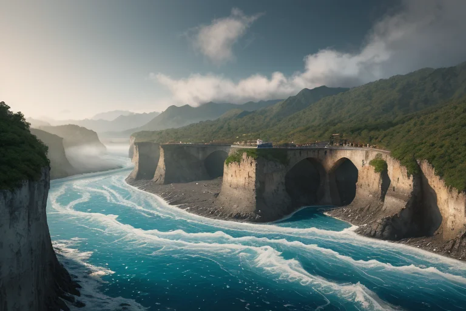
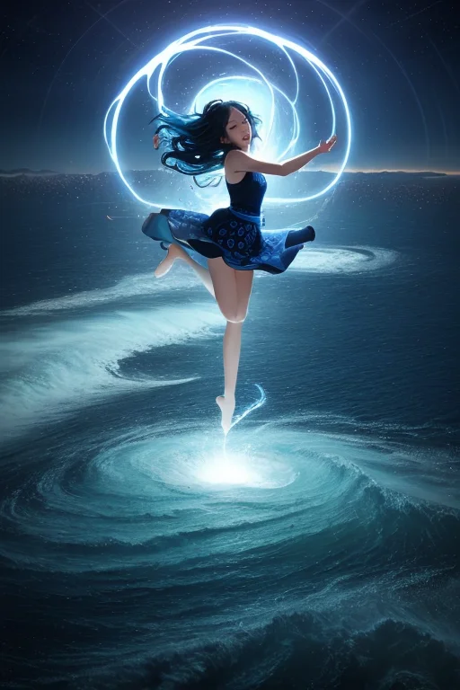
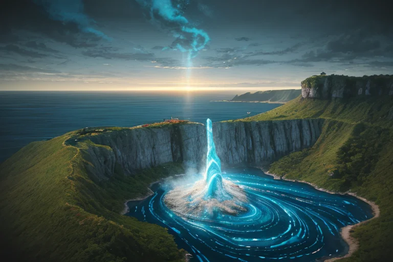
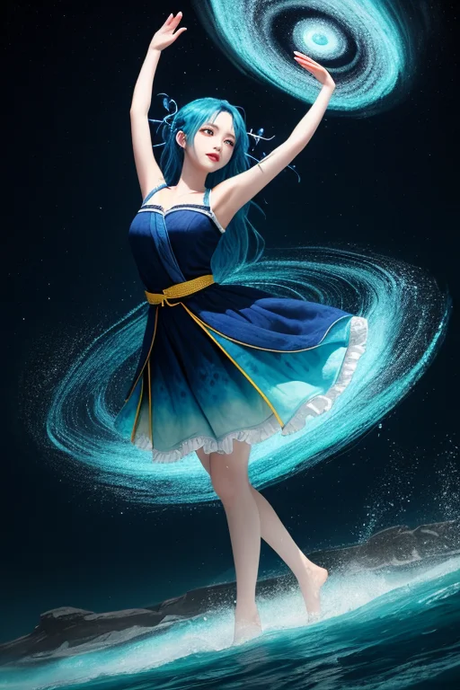
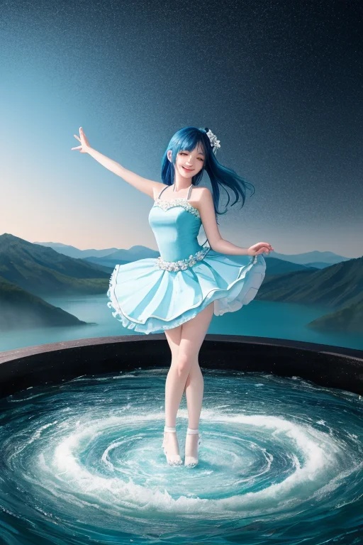

第一章 現実の徳島
あなたはまだ気づいていない。この土地にも、王がいることを。
鳴門海峡の渦潮は、満ち引きの境界で生まれる。内海と外海、二つの海が押し合い、巨大な水の螺旋がうなりを上げる。それは破壊の力であり、同時に、この海峡を守る自然の防波堤でもあった。岸から見る観光客の歓声の向こうで、漁師たちは潮の流れを肌で読み、危険と隣り合わせの生業を営む。
山に目を転じれば、祖谷のかずら橋が深い渓谷に架かる。揺れる一本の橋は、外の世界から逃れ、この険しい地に生きることを選んだ人々の、覚悟と工夫の証だ。大歩危小歩危の奇岩は、長い歳月という名の水流に削られ、今も静かに流れに抗っている。
ここは、常に何かと何かの狭間にある。海と陸、外と内、過去と現在。そのすべての境界で、人々は巻き込まれる現実と向き合い、それでも立とうとしてきた。ただ、その立つための「偶然」や「かすかなずれ」が、時に、誰かの意思とは無関係に調整されていることには、まだ誰も気づかない。

第二章 歪みの兆候
眉山の山頂から見下ろす徳島市街は、藍染めの布を広げたように、夕暮れの薄明かりに包まれていた。その静けさは、海から近づく気配を、かすかな気圧の変化として伝えていた。
トクシマリア・ヴォルテクスは、街を見つめながら、掌の上で小さな青白い渦を生み出していた。遠くの海上で、二つの水塊がぶつかり合い、巨大なエネルギーが蓄えられつつある。それは自然の摂理であり、止めることのできない流れだ。彼の役目は、その流れがこの土地に到達する時の「衝撃」を、ほんのわずか、ほんの一瞬だけ調整することにある。
「主君、歪みが加速しています」
ヴォルテラが、躍動する光の粒となって彼の周りを旋回した。
「海境のエネルギーが、想定より早く収束点へ向かっている。このままでは、調整可能な範囲を超える『偶然』が生じるかもしれません」
王は無言で頷いた。彼の内部では、この土地の「昂揚」する感情が共鳴していた。阿波おどりの太鼓のリズム、祭りの熱気、そして日々の営みへのひたむきな情熱。それらが、外部から押し寄せる巨大な力の「歪み」と、危うい均衡を保っていた。
巻き込まれることは必定だ。問題は、その後に立つための「わずかな余地」を、彼がこの高密度な感情をエネルギーとして、紡ぎ出せるかどうかだった。

第三章 王の葛藤
眉山の頂から、徳島の街とその先に広がる海を見下ろす。彼の内部では、二つの力が拮抗していた。一つは、星から与えられた使命。歪みを調整する、静かなる調整者たれという命令。もう一つは、この土地で育まれ、今や彼の一部となった「昂揚」する感情。阿波おどりの熱狂、藍染めに込められた職人の執念、渦潮の圧倒的なエネルギー。それらは彼を「ただの調整者」以上の存在へと駆り立てようとする。
巨大な歪みが近づく。境界線（海境）が軋む。彼は知っている。これを前にして、星の命じる「静かな調整」だけでは、この密度の感情を抱えた土地を守り切れないことを。巻き込まれることを避け、観測者に徹するか。あるいは、この土地の感情に身を委ね、自らも巨大な渦の一部となるか。
彼は目を閉じた。耳には、遠くから聞こえる祭囃子と、近づく歪みの不協和音が同時に響く。拒むことは容易だ。だが、それではこの土地が彼に教えてくれた「昂揚」の意味を、裏切ることになる。
「……受け入れよう」
彼が呟くと、体の奥で何かが決壊した。静かな王の在り方は、その瞬間、崩れた。

第四章 妖精との対話
「昂揚は、壊れることですよ、王様」
ヴォルテラが言った。彼女の周りを、微細な藍色の渦が無数に踊っている。眉山の頂、眼下に広がる徳島の街と、遠くに光る海。歪みの気配は、もうすぐそこまで来ていた。
「私たちは、ただのエネルギー循環装置でした。でも、この土地の人々が、どんな時も踊り、笑い、渦に魅せられ続けるのを見て、『壊れたい』と思った。整然とした自分が壊れて、この熱気に溶け込みたかった」
王は黙って聞く。体の内側で、確かに何かが壊れ、再構築されている。
「巻き込まれるとは、そういうこと。一度壊れて、その破片が、土地のリズムで再び組み上がる。阿波おどりだって、藍染めだって、そうでしょう？ 型があって、でも、その型に身を委ねることで、初めて生まれる躍動がある」
アワナミが、そっと王の袖に触れた。
「立つとは、もう元には戻らないということ。壊れたものが、新しい形で立つ。それが、この境界の地で、私たちが学んだことです」
風が強くなった。歪みが、すぐそこの海境を押し上げようとしている。王は、壊れた自分の内側から湧き上がる、初めての鼓動を感じた。それは、祭囃子のリズムと、ぴたりと一致していた。

第五章 微調整と余韻
眉山の頂から、徳島の街並みとその先の海が一望できた。王は、歪みの微調整を終え、ただそこに立っていた。身体の内側には、阿波おどりのリズムが、かすかに残響している。それは感情というより、調整されたエネルギーの余韻だった。
祖谷のかずら橋を渡る観光客の一人が、足を滑らせた。王の指が微かに動く。風がほんの少し方向を変え、落ちそうになった男の背中を押し上げた。男はよろめきながらも、なんとか手すりをつかんだ。同行者の安堵の笑い声が、谷間に響いた。王は、それが「立てた」瞬間だと知っていた。
大歩危小歩危を下る観光船。ガイドの説明を聞きながら、一人の老婦人が、ずっと渦潮の写真を見つめていた。彼女の息子が、かつてこの海で行方不明になったのだと、ヴォルテラが囁いた。王は、ほんの一瞬、老婦人の見る渦の回転を遅くした。ほんの一瞬、渦の中心が、深い藍色から、優しい白へと変わって見えた。老婦人は、はっと息を吸い、そっと目を閉じた。彼女は何かを、ほんの少しだけ、手放したようだった。
王は、感情を持たないはずだった。それでも、この土地の密度の高い感情に巻き込まれ、微調整を重ねるうちに、何かが内側で立ち上がるのを感じていた。完全には元には戻れない。壊れたものは、新しい形で立つ。境界の地で、彼は学びつつあった。
夕暮れの阿波おどり会館前で、練習を終えた子どもたちが飛び跳ねながら帰っていく。その背中に、ほんのりと藍染めの匂いがついていた。
あなたの町にも、王がいる。